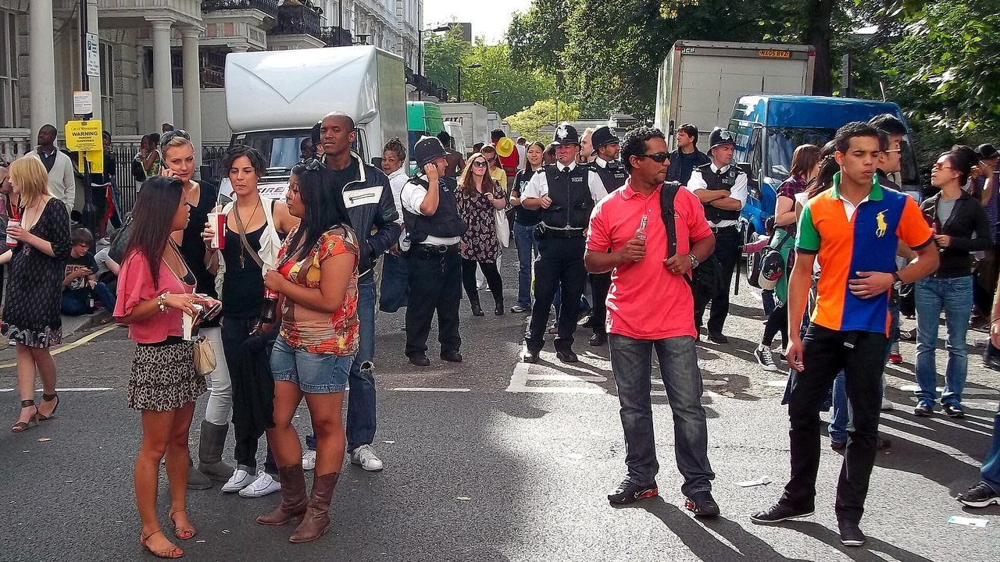

Race, Notting Hill Carnival

Behind
Best +0:01
371W
Target 418 W-47 W
- Cadence
- 87rpm
- Heart
- 140bpm
- Speed
- 26.5km/h
Work12 of 21
0:16
Next: · 0:20 at level 11
+2.2%
45 m climbed
3.09 km
22
Resistance / 32
Solo races your best-time ghost: position reads Ahead or Behind, and solo alone gets a Pause button. Frozen at 7:24.